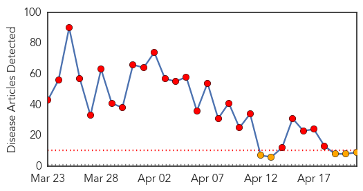
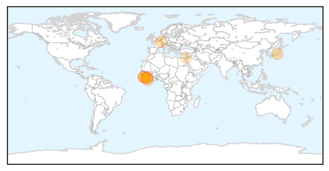

30 Day Trends
Web: 25 alerts, 5 warnings
Twitter: 10 alerts, 0 warnings
Top Articles:
- 1.000
- Ebola outbreak response scales up
- 1.000
- MSF Continues Ebola Response in Guinea and Liberia - Guinea
- 0.996
- Ebola Virus Claims 61 Lives in West Africa's Guinea
- 0.993
- UNICEF-Liberia Ebola Outbreak: SitRep #18, 21 April 2014 - Liberia
- 0.992
- West Africa's Ebola Outbreak Prompts Changes in I.Coast Cuisine — Naharnet
- 0.980
- UNICEF Guinea: Humanitarian Situation Report, 18 April 2014 - Guinea
- 0.969
- Guinea: UNICEF Guinea: Humanitarian Situation Report, 18 April 2014
- 0.939
- Ebola Disease Outbreak: 61 Persons Dead, 23 Hospitalised
- 0.674
- The Frontier Post,Pakistan,Peshawar
Top Tweets:
-
No tweets found for Apr 21, 2014
Web/News Articles
Tweets

Article Locations
Article Confidences